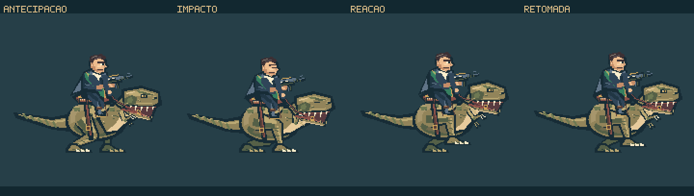
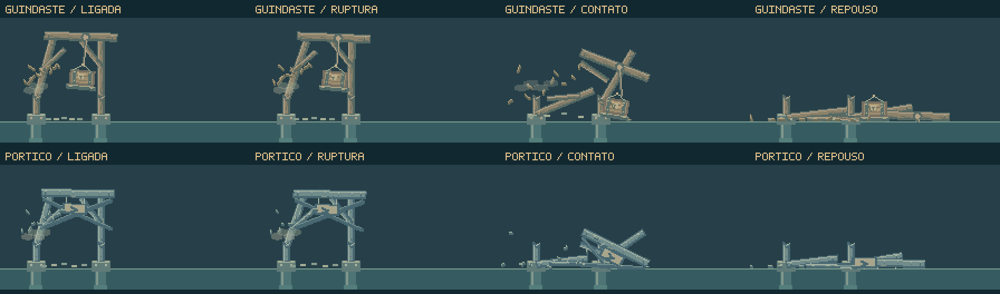
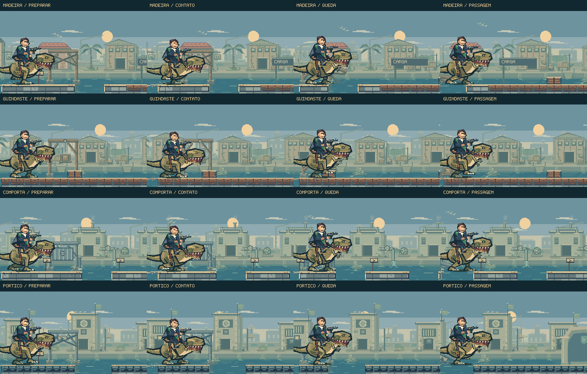

O impacto continua
pelo cenário.
O dinossauro recolhe as patas dianteiras ao atravessar a estrutura. As rédeas tensionam, o cavaleiro absorve o choque e o conjunto retoma a corrida. Atrás dele, cargas e placas continuam o movimento que receberam das vigas.
Jogar a perseguição →Ver a animação ↓
Da corrida à ruptura, sem perder a continuidade.
17 segundos de composição dirigida com os renderizadores nativos. Os trechos finais isolam as estruturas para mostrar as ligações. O vídeo não tem áudio e não registra uma partida.
As patas dianteiras acompanham a passada, recolhem-se na preparação e relaxam na recuperação. A corda se curva entre a mão e o cabresto; ela fica tensa no esforço e volta a ter folga depois do contato.
A carga pertence ao guindaste. A placa, ao pórtico.

A carga acompanha a polia e a placa acompanha suas duas correntes. Quando se soltam, conservam a posição, a velocidade e o giro daquele instante. Os cabos partidos continuam pendurados e perdem a oscilação gradualmente.
O canto da peça determina o contato com a margem. Poeira e som acompanham esse momento; as peças inclinam, deslizam um pouco e assentam. O entulho vem das partes que caíram: foi removida a viga extra que antes aparecia pronta no chão.
O mesmo acabamento nos quatro tipos de estrutura.

As trajetórias são determinísticas. A opção de movimento reduzido diminui a oscilação decorativa das patas e das rédeas e a quantidade de partículas, preservando a leitura da ruptura.